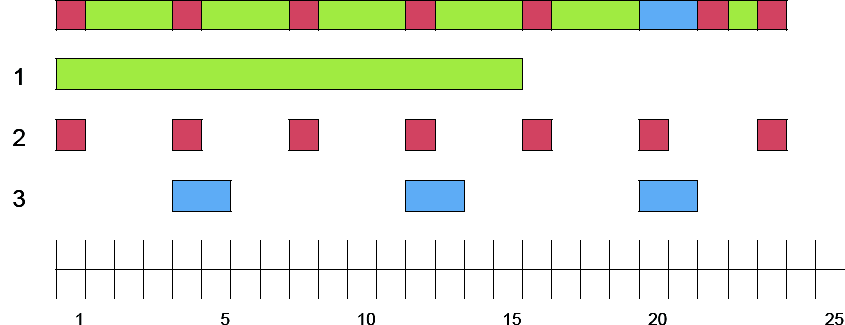

Research School of Engineering
ENGN8537: Embedded Systems and Real Time Digital Signal Processing
Synchronization and
Locking
Race Conditions
Conditions for racing:- System Concurrency
- Shared Resources (between concurrent paths)
- Resource access is not atomic
- Resource access is not synchronized
Concurrency and Sharing
Almost all Embedded Systems are concurrent, even if only between the main code and interrupts.
Most Embedded Systems will have at least some threads that share memory.
Atomicity
Atomic Actions
An operation that cannot be broken in to smaller pieces.
Atomic
- Single RISC Instructions
- Word-sized Memory accesses
- Anything while concurrency is disabled
Not (nec.) Atomic
- Single CISC Instructions
- Larger-than-word Memory accesses
- Most things when running with multiple processors
- Most things when running with interrupts enabled
Building Atomicity
Building atomicity effectively means disabling concurrency.save_and_disable_interrupts(); do_action_atomically(); restore_interrupts();
Doesn't work on multiprocessor machines.
May ruin real-time constraints.
Synchronization
Semaphores
int i; Semaphore lock;
Thread 1
while(1) {
wait(lock);
i++;
signal(lock);
_delay_1ms();
}Thread 2
while(1) {
wait(lock);
i = 0;
signal(lock);
_delay_500ms();
}Waiting on a semaphore blocks a thread's execution until the lock is released.
Signalling a semaphore marks it as released and unblocks all threads waiting for it.
As a result, only a single thread can be in the critial section between the wait and signal calls for any given lock.
Must be implemented with help from your scheduler/executive.
Warning
- Semaphores must be added at every access of a protected variable
- Semaphores may not be fair
Fairness
int i; Semaphore lock;
Thread 1
while(1) {
wait(lock);
i++;
signal(lock);
}Thread 2
while(1) {
wait(lock);
i = 0;
signal(lock);
}Depending on implentation, there is no guarantee that both of those threads will run - one may always release the lock then be allowed to immediately re-take it.
- The waiting processes are placed on a queue and the ‘front’ one is woken up at each signal
- Complex but fair
- All waiting processes are woken up at each signal and they race to try and claim the lock
- Simple but can lead to starvation
Monitors
int i; MonitoredArithmetic(i) iMonitor;
Thread 1
while(1) {
iMonitor.increment();
_delay_1ms();
}Thread 2
while(1) {
iMonitor.set(0);
_delay_500ms();
}Deadlocks
int a; int b; Semaphore lock_a; Semaphore lock_b;
Thread 1
wait(lock_a); wait(lock_b); a = a + b; signal(lock_b); signal(lock_a);
Thread 2
wait(lock_b); wait(lock_a); a = b = 0; signal(lock_a); signal(lock_b);
lock_b which is then released immediately upon return to Thread 1. The code completes as expected.int a; int b; Semaphore lock_a; Semaphore lock_b;
Thread 1
wait(lock_a); wait(lock_b); a = a + b; signal(lock_b); signal(lock_a);
Thread 2
wait(lock_b); wait(lock_a); a = b = 0; signal(lock_a); signal(lock_b);
lock_a while waiting on lock_b; Thread 2 is waiting on lock_a while holding lock_b.Priority Inversion
Suppose Green is holding a lock that Blue is waiting to acquire.
